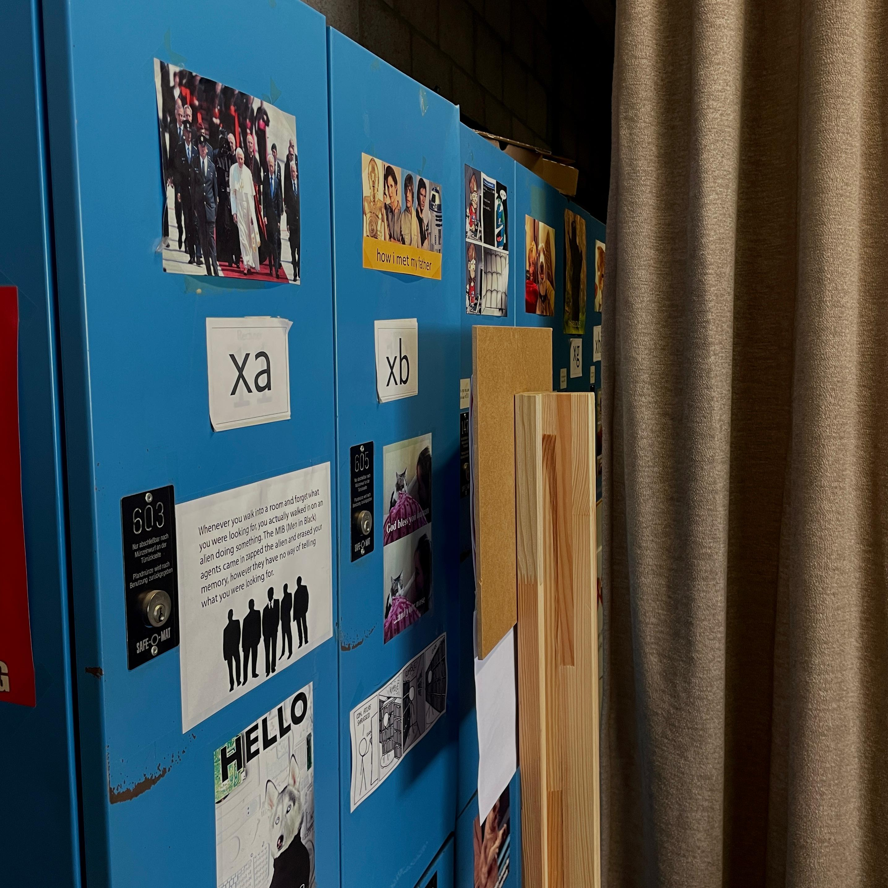
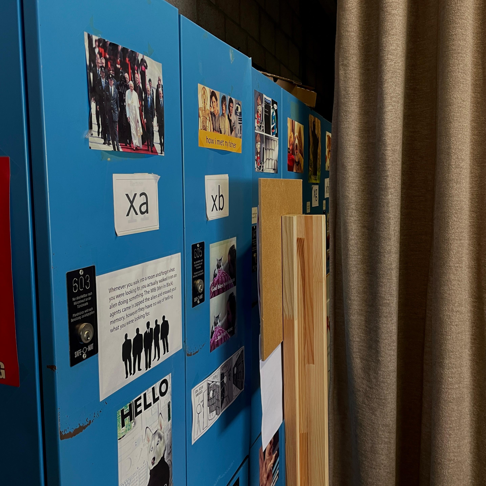
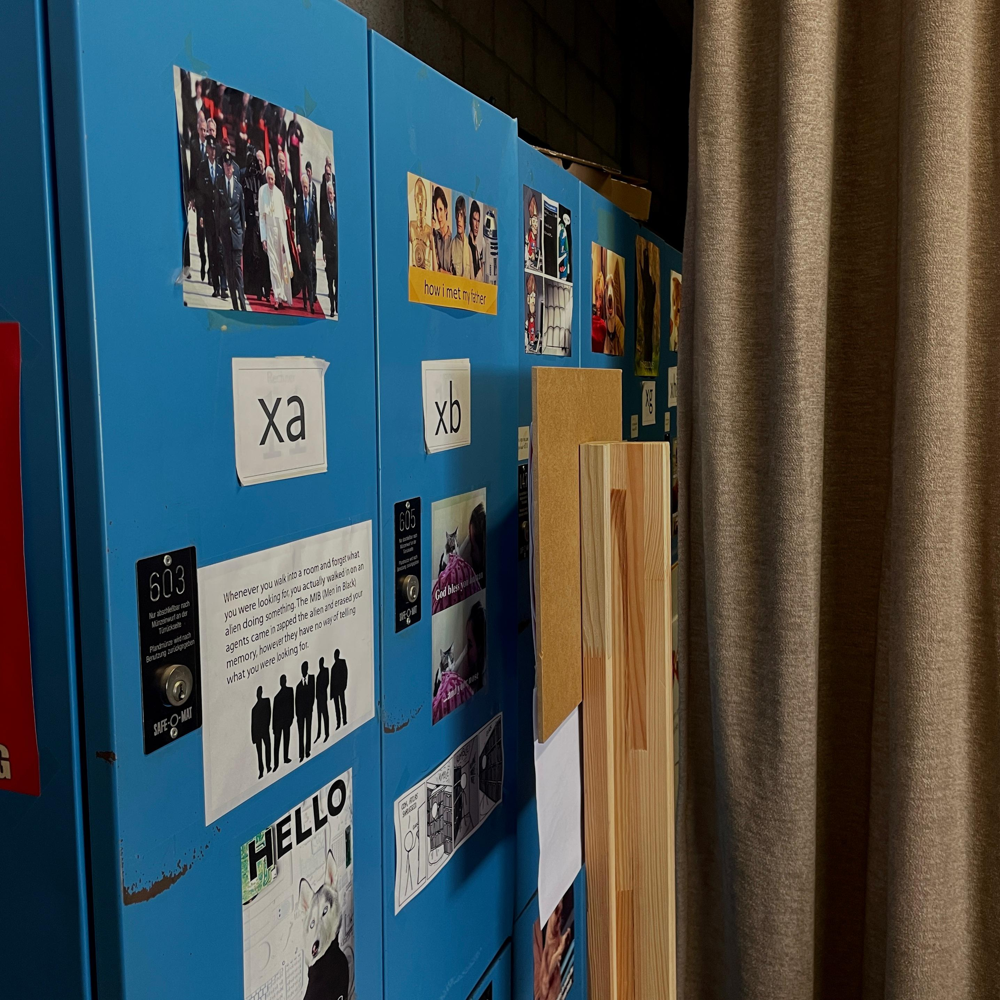

What to do: Welcome to the Math Building, where the magic of numbers happens! Sure, some folks might say it's a bit of an eyesore, and the bathrooms? Yeah, they could definitely use some love. But hey, every building has its quirks, right? There’s something special about this place that makes it unique!

Next Magic Word: Keep your eyes peeled for cool stickers around the building! You’re on the hunt for a shiny green sticker with an integral sign. Here’s a hint: one of them is chillin' on the side of the lockers on the second floor. The next password is what’s written on those stickers—8 characters long, all caps, and no funny symbols!
Next location: The Main Building [H]—let's bounce!
What to do: First up, check out the Math Library on the first floor, where you can hit the books and borrow some sweet reads. If lugging your stuff around every day sounds like a hassle, you can snag a locker from the library for six months—for free! The locker rooms are conveniently located on the eighth floor of the math building. How cool is that?
Need to hunt down some books? Use the library's catalog, Primo, to make your search easier. If you're in the mood for some computer work, the Unix pool on the second floor is your best bet. It’s usually open from 10 AM to 6 PM, and if you’ve got your Immatrikulationsbescheinigung (fancy name for the registration certificate), you can get a Unix Pool account for free! That means you can print 100 pages in black and white each month. Super handy for all that homework!
Want to access your Unix account on the go? You can use your phone with the a-Shell app or hop on your Linux computer. From the terminal, you can send files from your phone or laptop using the command:
scp Folder/file NAME@unixpool.math.tu-berlin.de:Desktop/ .
Then log into your Unix account with:
ssh NAME@unixpool.math.tu-berlin.de.
And when you're ready to print, just use:
lpr -Pps1 Desktop/file.
Pretty neat, huh? The Unix pool is often pretty empty, making it a cozy spot to study.
On floors five through eight, you'll find plenty of seminar rooms for tutorials or late-night study sessions. I love these rooms because they come with chalkboards! And don't forget about the Math Cafe on the eighth floor, where you can grab drinks like mate and beer at awesome prices—because it’s non-profit. Rooms 848 and 849 are open for students during the math building's working hours, so make yourself at home!